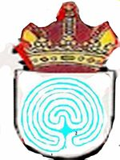

Marín
 De: La Frikipedia, la enciclopedia extremadamente seria.
De: La Frikipedia, la enciclopedia extremadamente seria.
| De la serie pueblos del mundo:
|
| Marín
|

|

|
| (Bandera)
|
(Escudo de armas)
|
|
| Topónimo oficial
|
Galegën
|
| País
|
Galizasland
|
| Código postal
|
00069
|
| Superficie
|
Unos ferrados
|
| Altitud
|
Hasta Oenaga
|
| Distancia
|
No
|
| Fundación
|
Sí
|
| Población
|
Rehabilitándose
|
| Gentilicio
|
Discalzos
|
| Alcalde
|
Pepiño Meijón
|
Marín es una república independiente do carallo con afán de conquistar todo lo que tiene alrededor. Se caracteriza por tener un Gran Puerto y una base de subnormales militar, que sumando las dos superficies, son tan grandes como las chabolas en las que vive la gente. Tiene una amplísima zona de marcha, con cientos de locales abiertos hasta altas horas (como el bar Lele, la farola o la trastienda), y con gran cantidad de gente. Consta de numerosos aparcamientos subterráneos que facilitan la tarea de aparcar, hasta tal punto que se considera deporte nacional "Aparcar en Marín". Debido a la falta de ocio en el pueblo de Marín cierto porcentaje de la población es extremadamente aburrida y abundan las frases como "No me cunde ir" o "Hoy me quedo en casa que me duele un dedo".
Marín es una ciudad muy bulliciosa, la gente se organiza en los llamados grupos ERS: skatERS, bikERS, rapERS, sunormalERS, etc. Los de este último grupo son los que se acercan a la fuente de la alameda cuando salpica por fuera (fieles a su nombre). También abunda una ingente fauna y flora local, como las viejas asesinas que cuando estornudas en las cercanías de sus dominios sueltan un sonoro "Me cagho na cona que te botou rapas" o "Miiimaaaa o que tes ahí metido".
En Marín se pueden (o se podían) hacer muchas cosas (patinar, andar en bici, etc.) hasta que unos seres de verde y negro (aliens no, pero casi) prohibieron toda acción que pueda perjudicar a la gente del lugar, concretamente a los ancianos que van a 2 m/h. También se caracterizaba por ser un lugar en el que podías aparcar en lugares decentes, sin miedo a que la grúa te llevase el coche.
Objetivos de conquista
- Lourizán (lugar provisto de plaza atravesada por un tren y una fábrica que emite un agradable olor). Barrio actualmente perteneciente a la periferia de Pontevedra.
- La escuela naval y todos sus capullos.
- La otra mitad de Lapamán. Actualmente perteneciente a los capullos de Bueu.
- La otra mitad del lago de Castiñeiras. Perteneciente a Vilaboa y a Pontevedra.
- La isla de Tambo. Perteneciente a las fuerzas armadas. Aunque no debe de ser muy adecuado ir porque dicen que ahí es donde montan sus orgías gays.
- Las diversas barriadas locales que gozan de estatuto de Ciudad Estado, a saber, la Cañota, San Pedro, y Mogor (si entras RIP).
- El ayuntamiento (lugar que habitan una sarta de chorizos incompetentes y magos de gran talento que sólo saben arreglar sus calles o hacer desaparecer fondos del presupuesto).
- EL ECOPARQUE (lugar cuya concesión es dudosa y encima no dan merienda con la entrada).
Personajes
- María Ramallo: Conocida por ollo virollo, la Ramera, a que non da Traballo. Perteneciente a la estirpe de los Naziolan Socialistas; melliza a nivel intelectual de Ana Botella, Fátima Banez o Ansar.
Sus hobbys favoritos son salir en todas la fotos de los periódicos, robar el dinero del pueblo y malversar con el Ecoparque, el restaurante del Malecón, el bar de la plaza de abastos, etc; cediendo permisos de más que dudosa legalidad.
- Peñoño: Lider de los gorrillas del Muelle, trabaja a tiempo parcial como confidente de la poli.
- Los curas de San Narciso: Los últimos informes dictan que sus edades datan de la época de los Templarios.
- Los Zamoranos: Tienen su cuartel general en el Cacho Pizza y alrededores; devotos de la Primera Iglesia Evangelista de los Chungitos.
- La Policía Local: Enchufados de los alcaldes de la villa marinense; su trabajo es ir de furanchos, aparcar en zonas de paso de peatones y minusvalidos. Juegan a tiempo parcial al Candy Crush mientras realizan "vigilancia" dentro del coche.
Enemigos de los marinenses
- Los de Bueu (falame sempre!!)
- Los de Vilaboa
- Los de Poio
- Los de Sanxenxo
- La escuela naval militar (y los conocidos como CAPULLOS que se pasan las tardes jugando al padel en las inmediaciones de la escuela) mientras a los del pueblo llano no nos dejan ni andar en bici por Marín adelante.
- Los pontevedreses que no acepten sumisión a ellos.
- El concello de Pontevedra, ya que los muy capullos poseen el plan urbanístico de Marín y han prohibido construir el legendariamente soñado centro comercial del muelle porque les resta turismo (sí... una villa con título de ciudad debido a su número de habitantes peca de no tener plan urbanístico).
- Los peritos de la Escuela Universitaria de Ingeniería Técnica Industrial de Vigo
- Los de Monteporreiro.
- Los de Campañó.
- Los rumanos.
- Los Okutu´s African shop (porque van de colorines).
- Los malotes que no tienen media bofetada.
- Los de Mogor.
Deportes nacionales
- Meterse con la gente y cotillear (actividad muy frecuentada).
- Dar de ostias (principales representantes en esta modalidad los de la Cañota si te ven cara de "Forasteiro").
- Aparcar en Marín.
- Nadar hasta las bollas para apalancarse en ellas (es mucho mejor que las toallas). ¡Ojo! Patentado por los de Mogor.
- Hacer litronas en la puerta de la iglesia.
- Echarse una siestecilla en un banco del Parque Eguren a las 4 de la tarde.
- Copar compulsivamente al instituto Illa de Tambo, con dirección Polymia, punto de reunión de sus estudiantes.
- Sentarse en la punta del muelle.
- Tirarse al mar en la punta del muelle.
- Estrellarse en la venida de Ourense.
- Hacerse socio de la peña Hugo Mallo.
- Salir por Pontevedra e intentar convencer a los pontevedreses de que se agreguen a Marín (dos chupitos nomás y ya está hecho).
- Inflarse como cerdos en peperetadas (temporalmente con los 3 gofres por 1 euro).
- Estar sentado en la esquina del kiosko del parque Eguren.
- Robar motos y otros bienes "encontrados casualmente" por la calle.
- Controlar tu zona o barrio al estilo GTA.
- Atravesar el muro de negros de las galerías Colón.
- Conseguir entrar en la Cañota y salir vivo de ahí.
- Ir al hotel Cadrelo antiguamente Casablanca (casa de señoras).
- Ir de compras al Mercadona.
- Entrar en el Mercadona solo para comer todos los pinchos gratuitos.
- Coger sitio en el autobús a Ponte sobre las 5 (esto se considera deporte de riesgo ya que existen casos de personas que salieron volando al frenar por ir de pie).
- Ir al recinto de botellón.
- Usar los parques de los niños pequeños.
- Hacer grandes graffitis por las paredes o sino como Pepiño Meijón que te pones a hacer unos petroglifos.
- Conseguir sitio en la Alameda (Si quieres un banco tendrás que luchar con hordas de viejos estilo zombies).
- Conseguir patinar en la Alameda sin que las fuerzas de seguridad te llamen la atención.
- Conseguir patinar en la Alameda sin que los viejos vengan a joder.
- Conseguir patinar en la Alameda sin que los viejos que vienen a joder llamen a las fuerzas de seguridad.
- Lograr subir la fulminante cuesta del cementerio sin terminar para siempre dentro de él.
- Convencer a los pontevedreses de que los marinenses no tenemos acento raro (cuando estos ya van medio trompa es fácil hacerlo).
- Pillar el bus para ir a ponte al INEM.
- Ser explotado en las descargas.
- Ir a bares, bazares chinos y casas de pilinguis (son los únicos negocios en auge).
- Saltar por encima de los coches grabándose en vídeo (como sos pesque sos cruje).
- Ir a timbrar a la casa de la Concha y que la vieja salga a darte con la escoba.
- Ir a buscar balones a las silvas.
- Hacer hogueras en la Alameda.
Autor(es):
- Fordus
- Zarovich
- Frikiman
- Roms
- Viento
- Azulejos
- El Sevillano
- Frikih
- Cibercrank
- ArreKarallo
Frikipedia 2005-2016, Licencia
GFDL 1.2 - Extraído por FrikiLeaks